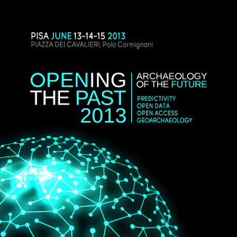

Università di Pisa, 14 giugno 2013, seconda giornata di Opening the Past: l’ “archeologia open” in teoria e in pratica, in Italia e nel resto del mondo. Con me c’è Paola, la prima archeologa ad aver scritto entusiasta alla mail di OpenPompei; conosco di persona Gabriele di Mappa Project, dopo diversi scambi via Twitter; Antonia di Professione Archeologo non riesce a venire, ma mi scrive per farmi conoscere Valeria che è seduta poco più indietro di me. Insomma, sento una piacevole sensazione di community.
{kind=link}
Open data e open access sono ovviamente i temi chiave di ogni presentazione. Alcune di esse riguardano prevalentemente il mondo accademico e la difficoltà di incentivare l’open access all’interno delle università italiane senza una legislazione adeguata. Altre presentazioni invece propongono delle sperimentazioni di apertura e utilizzo dei dati archeologici, molte di queste iniziate in ambito accademico per poi essere utilizzate anche all’esterno. La lectio magistralis di Julian Richards dell’Università di York fornisce una interessante panoramica sul rapporto tra archeologia e open data nei cinque continenti, a partire dalla sua esperienza: ADS, Archaelogy Data Service, la prima piattaforma per incentivare l’utilizzo dei dati digitali nel mondo archeologico creata nel 1996 da un consorzio formato da diverse università britanniche e dal Council for British Archaelogy coordinato dall’Università di York. La piattaforma oggi raccoglie più di 700 archivi e più di 20.000 report di campagne di scavo. Secondo una ricerca condotta dal Prof. Richards ogni tre mesi su ADS si contano circa 45.000 downloads di dataset e i dati vengono utilizzati prevalentemente per la ricerca, solo il 6% degli utenti usa tali dati per l’insegnamento e solo l’11% per sviluppare strategie di management del patrimonio. Dopo ADS sono nate molte altre piattaforme in molti altri paesi per open data archeologici: nel 2007 Open Context negli Stati Uniti, nel 2010 Sustainable Archaeology in Canada, nel 2012 FAIMS in Australia e SND Swedish National Data Service in Svezia che non raccoglie solo open data archeologici, ma anche dati relativi alle scienze sociali, ad altre scienze umanistiche e della medicina. Altre piattaforme invece sono state create in cooperazione da paesi diversi con lo scopo di integrare i datasets come Arena, Europeana, FastiOnline. La necessità dell’apertura dei dati archeologici secondo il Prof. Richards è relativa alla necessità di garantire la conservazione: “there’s no preservation without re use of the data”, ha concluso.
Anche l’Italia ha la sua piattaforma per open data archeologici, una sola e al suo primo anno di vita: si chiama Mappa Project. Sono proprio i suoi creatori ad organizzare il convegno che ci ospita, in occasione del quale presentano i risultati di un sondaggio il cui scopo era quello di capire cosa ne pensa e cosa se ne fa degli open data chi si occupa di archeologia in Italia. In due mesi sono arrivate 650 risposte a ben 61 domande, un numero di risposte importante che però gli ideatori di Mappa Project non sanno quanto sia realmente rappresentativo perché “non sappiamo davvero quanti siamo”, dice Francesca Anichini: i dati ministeriali dicono che ci sono più di 6000 archeologi sul campo, le associazioni di categoria ne contano la metà. A fronte di un buon livello di competenze informatiche riscontrato in tutte le persone che hanno risposto al sondaggio, le constatazioni più interessanti sono che, sebbene la metà (47%) sappia cosa siano gli open data e il 90% ritengano che siano il futuro della ricerca archeologica, soltanto un terzo degli intervistati li utilizza e lo fa per fare dei confronti, un po’ come fossero testi. D’altra parte però l’80% ha anche affermato che i dati disponibili sino ad ora in Italia sono pochi e non rispettano le caratteristiche minime di completezza per poter essere davvero utili, per esempio ci sarebbe bisogno di più immagini. I risultati del sondaggio ovviamente toccano anche il delicato aspetto della paternità intellettuale dei dati e il 75% di chi ha risposto ritiene necessario riconoscerla a chi genera i dati insieme al diritto di prelazione per un periodo che va dai 3 ai 5 anni dalla pubblicazione. Il 77% concorda nel rendere equiparabili le pubblicazioni dei dati alla pubblicazione scientifica, ma sulla licenza migliore per la pubblicazione una grande percentuale non risponde, mentre una piccola fetta indica la licenza CC BY NC SA (Creative Commons attribution non commercial share alike). I rischi che i dati vengano “rubati” e che non siano attendibili sono le remore principali che bloccano molti archeologi ad utilizzare gli open data. Sul problema delle licenze ritorna successivamente l’avvocato consulente di Mappa Project elencando tutti gli aspetti della legislazione che ha dovuto considerare prima di inserire i dati nell’archivio, aspetti che mutano in relazione alla diversità degli oggetti (documentazione compilativa, documentazione fotografica, documentazione grafica e “letteratura grigia”). L’avvocato indica una serie di leggi che vincolano la pubblicazione o la rendono problematica e una serie di soluzioni, a volte anche molto semplici, per ovviare a tali restrizioni come la liberatoria dell’autore per svincolare l’opera dai diritti o un semplice permesso per fare e divulgare fotografie del patrimonio archeologico da parte della Soprintendenza di Pisa per uscire dai vincoli del decreto legislativo 42/2004 sul diritto di riproduzione, sino al chiarimento relativo alla compatibilità delle licenze Creative Commons con il diritto di riproduzione di cui sopra e di cui avevamo scritto anche in relazione a Wiki Loves Monuments. Un’altra interessante esperienza italiana ce la racconta Simone Massi de La Sapienza di Roma: si tratta di un sistema aperto per i dati archeologici di Mozia creato utilizzando il software MediaWiki al quale però bisogna registrarsi per accedere.
La giornata si chiude con una discussione finale in cui, com’era prevedibile, qualche archeologo scettico dimostra di essersi convinto dell’utilità dell’apertura dei dati, altri muovono ancora delle critiche, molto tecniche, ma si dimostrano consapevoli e convinti che sia necessario muoversi lungo questa strada. Insomma, c’è ancora tanto da scoprire e tantissimo da fare. E per noi la prossima tappa è Catania, il 18 e il 19 giugno per ArcheoFOSS: Open Source, Free Software e Open Format nei processi di ricerca archeologica. Chi viene con noi?
Ciao Alessia…
dopo la tappa pisana, siamo già pronti a ripartire per Catania..
a prestissimo!
Ciao Alessia! Che bello vedere i nostri nomi insieme alla parola community!
In merito alle remore e alle critiche che noi archeologi solleviamo spesso di fronte alle res novae, bisogna avere pazienza e perseverare. Sono certa che il progetto OpenPompei potrà davvero essere un volano in questa direzione. Un abbraccio
Paola, l’archeologa che sin dall’inizio ci sta seguendo, mi diceva che probabilmente i paesi con un patrimonio e una tradizione meno antica riescono più facilmente ad aprirsi al nuovo, come aprire i dati e condividerli dunque con gli altri. Che OpenPompei possa essere un volano per questo noi lo speriamo, ma c’è anche da dire che come te, Valeria, Paola, Gabriele e Francesca di Mappa Project, ci sono tante persone che stanno lavorando in questa direzione. Unire le forze, credo sia la cosa più semplice e naturale.
Intanto, perché non entrate a far parte della long list di esperti? http://www.openpompei.it/2013/06/13/openpompei-chiama-comunita-entra-nella-long-list-di-esperti-di-dati-aperti-e-economia-hacker/
Valeria, ci vediamo domani a Catania!
Pingback: Be open, be free | Professione Archeologo